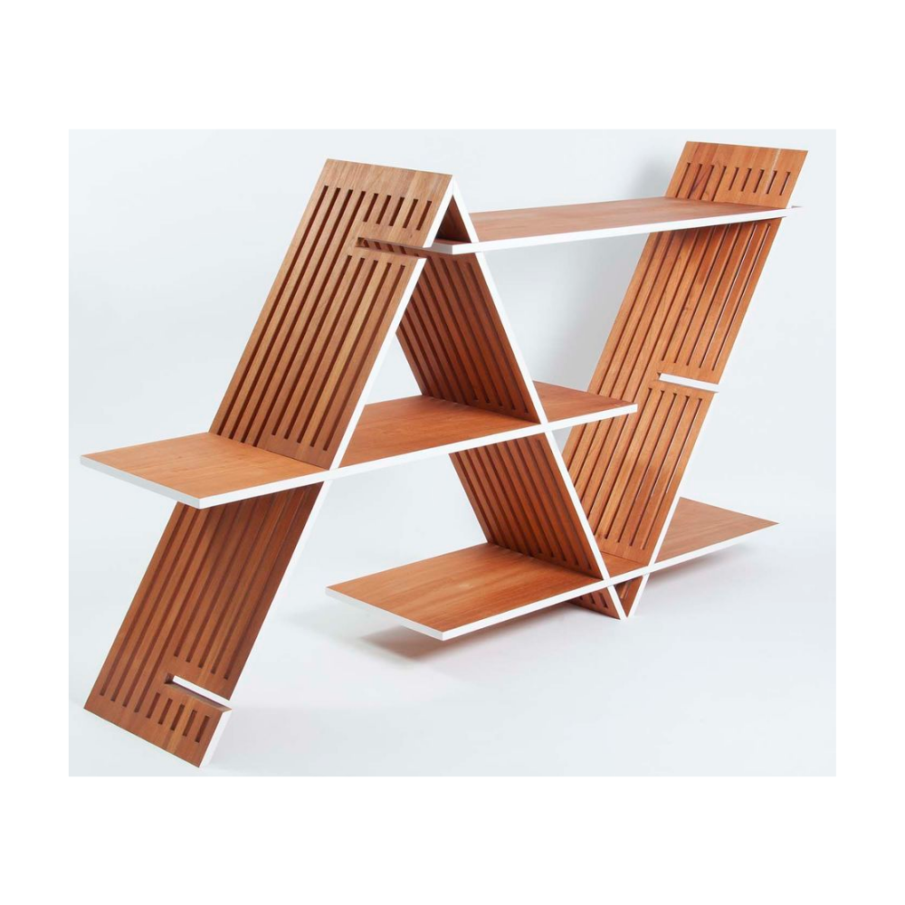
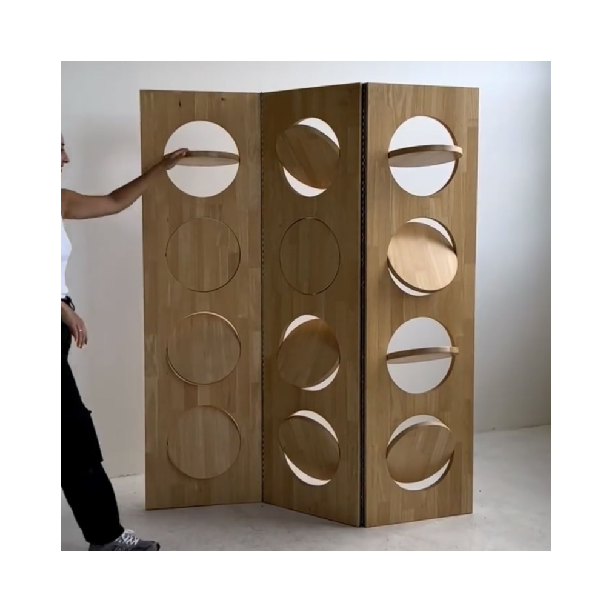
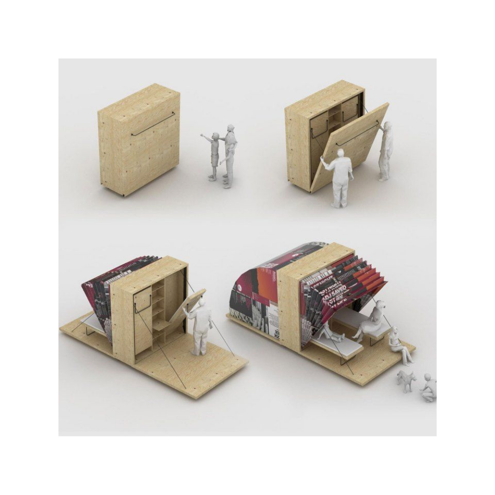

Materiales
Ligereza: materiales livianos y fáciles de mover.
Buscamos explorar diferentes conceptos relacionados con la cultura digital, el diseño digital y la arquitectura efímera, con el fin de ampliar nuestros conocimientos e identificar nuevas posibilidades creativas. A partir de la investigación de estos temas, sus características, tendencias y aplicaciones, se pretende desarrollar una idea de producto original e innovadora, definiendo su concepto y realizando un esquema básico que permita entender cómo sería, cómo funcionaría y qué elementos lo conformarían.
Es el conjunto de conocimientos, hábitos, valores y formas de interacción que surgen del uso de las tecnologías digitales. Ha transformado la manera en que las personas se comunican, aprenden, trabajan, crean y se relacionan con el mundo.
1960–1980
Desarrollo de computadoras.
1990
Expansión de internet.
2000
Aparición de redes sociales.
2010
Smartphones y aplicaciones móviles.
2020
Inteligencia artificial y tecnologías inmersivas.
La cultura digital pasó de utilizarse principalmente para almacenar y procesar información a convertirse en parte fundamental de la vida cotidiana.
Su evolución permitió pasar de una comunicación tradicional a una inmediata, de consumir información a crear contenidos y de interactuar mediante pantallas a experimentar entornos digitales inmersivos.
Facilita el intercambio inmediato de información mediante redes sociales, mensajería, correos y videollamadas.
Permite acceder a clases virtuales, cursos, recursos interactivos y herramientas digitales que fortalecen el aprendizaje.
Impulsa la producción de fotografías, videos, ilustraciones, animaciones y diseños para plataformas digitales.
Transforma el consumo de música, películas y videojuegos mediante plataformas de streaming y experiencias interactivas.
Facilita la conexión entre personas, la creación de comunidades y el intercambio de experiencias sin barreras geográficas.
Permite a las máquinas analizar información, aprender y generar textos, imágenes, videos y soluciones automatizadas.
Incorpora elementos digitales sobre el entorno físico, combinando objetos reales con información virtual.
Crea espacios completamente digitales donde los usuarios pueden explorar e interactuar mediante dispositivos especiales.
Combinan imágenes, sonidos, animaciones y tecnologías interactivas para involucrar al usuario en experiencias sensoriales.
La cultura digital ha transformado nuestra manera de comunicarnos, aprender, crear y relacionarnos, generando nuevas oportunidades de desarrollo e innovación.
Diseñar productos, contenidos y experiencias digitales para resolver necesidades reales de las personas.
Investiga, prueba y mejora.
Gráfico, interacción, audiovisual y código.
Las herramientas cambian; el criterio queda.
Entiende al usuario.
Define el problema.
Prototipa soluciones.
Prueba y corrige.
Además: trabajo en equipo, aprendizaje continuo y ética.
Apps, web, plataformas.
Identidad y dirección de arte.
Animación e ilustración.
Mecánicas, niveles, arte.
Modelado y prototipado.
Visualización, RA/RV.
También: trabajo independiente y emprendimiento.
Fuentes: WEF (2025); BLS (2025); DANE vía Portafolio (2026).
Es la arquitectura pensada para existir por un tiempo limitado: se diseña, se monta, cumple su función y se desmonta.
Su valor no está en durar, sino en responder rápido a un evento (feria, exposición, concierto, pabellón, emergencia).
Temporalidad: vida útil corta, de horas a meses.
Ligereza: materiales livianos y fáciles de mover.
Modularidad: piezas repetibles y combinables.
Montaje y desmontaje rápidos, con poca obra húmeda.
Transportabilidad: se empaca, se mueve y se vuelve a armar.
Reutilización y adaptación: se reconfigura según el espacio y el evento.
Impacto visual: comunica una marca, una idea o una experiencia.
Menor huella en el sitio, aunque lo sostenible depende del material.
Ligereza: materiales livianos y fáciles de mover.
La estructura se piensa desde el inicio para moverse. Se divide en módulos livianos, plegables, apilables o inflables que se desinflan, con medidas que encajen en pallets, cajas, racks o camiones. Un buen diseño reduce el peso y el volumen, lo que baja el costo y el número de viajes. Las piezas viajan con embalaje protector y rotuladas por zona. También se consideran los accesos del lugar (puertas, ascensores, rampas) y el orden de descarga, para no perder tiempo buscando piezas.
El montaje es el proceso de armar la estructura en el lugar del evento, en poco tiempo y con pocas personas. Primero se hacen los planos y se prefabrican las piezas en taller, así en el sitio solo se arma. Se usan uniones secas como pernos, encastres, clips o cierres rápidos, y casi nada de obra húmeda. El desmontaje se planea desde el diseño, porque la estructura tiene que poder desarmarse sin romper las piezas. Se hace en orden inverso al montaje, con uniones reversibles. Las piezas se limpian, se revisan para ver si tienen daños, se rotulan y se guardan. Lo que ya no sirve se separa para reciclar. Además, el sitio debe quedar como estaba.
Un buen desmontaje ahorra material, tiempo y dinero, y deja las piezas listas para el siguiente evento.
Los elementos se diseñan para usarse en varios eventos, no solo en uno. Para eso se usan módulos de medidas estándar, piezas intercambiables, materiales durables y repuestos disponibles. Entre un uso y otro se necesita buen almacenamiento y mantenimiento, para que las piezas no se dañen ni se vean desgastadas. Cuando una pieza llega al final de su vida útil, se recicla o se le da un segundo uso, siguiendo la idea de economía circular. Reutilizar ahorra dinero a largo plazo, reduce residuos y baja el impacto ambiental.
Son estructuras que viajan en forma compacta y se expanden hasta alcanzar su tamaño final. La idea es que, plegadas, ocupen poco espacio para el transporte y el almacenamiento, y que al abrirse cubran un área mucho mayor. Funcionan como un paraguas o una tijera gigante.
Están hechas de barras unidas por articulaciones. Un ejemplo común es el sistema de tijeras: pares de barras cruzadas que giran sobre un pasador central. Al abrir el conjunto, las barras se separan, la estructura se alarga o se eleva y gana área y altura.
Aluminio, acero, articulaciones, lona.
Stands, carpas de emergencia, cubiertas, cúpulas móviles.

Son plataformas y estructuras escénicas que se arman y desarman, o que se despliegan desde un camión. Permiten tener un escenario completo en cualquier lugar, desde una plaza hasta un campo abierto, sin obra permanente.
Se arman con módulos de plataforma, torres, estructuras de cubierta y pasarelas, unidos con sistemas de anclaje y lastres. Es una especie de rompecabezas que se adapta al tamaño del evento.
Aluminio, acero, madera, plataformas modulares, lona.
Conciertos, festivales, eventos al aire libre, presentaciones.

Son elementos con bisagras que se doblan sobre sí mismos, como un libro, un acordeón, una puerta de varias hojas o una mesa plegable. Son la solución más simple y económica para tener un espacio que se arme y se guarde rápido.
Paneles o módulos unidos por bisagras giran hasta quedar planos, uno contra otro, y así se transportan y almacenan. Al abrirlos y fijarlos, forman muros, divisiones, mostradores o muebles.
Paneles de madera, aluminio, plástico corrugado, cartón, bisagras metálicas, ganchos y cierres.
Mostradores, exhibidores, mobiliario de eventos, divisiones de espacios, stands pequeños, paneles de exposición y puntos de información.

[Pendiente: ¿Qué es?, ¿Cómo funciona?, materiales, ventajas y aplicaciones.]
[Pendiente: ¿Qué es?, ¿Cómo funciona?, materiales, ventajas y aplicaciones.]
[Pendiente: ¿Qué es?, ¿Cómo funciona?, materiales, ventajas y aplicaciones.]